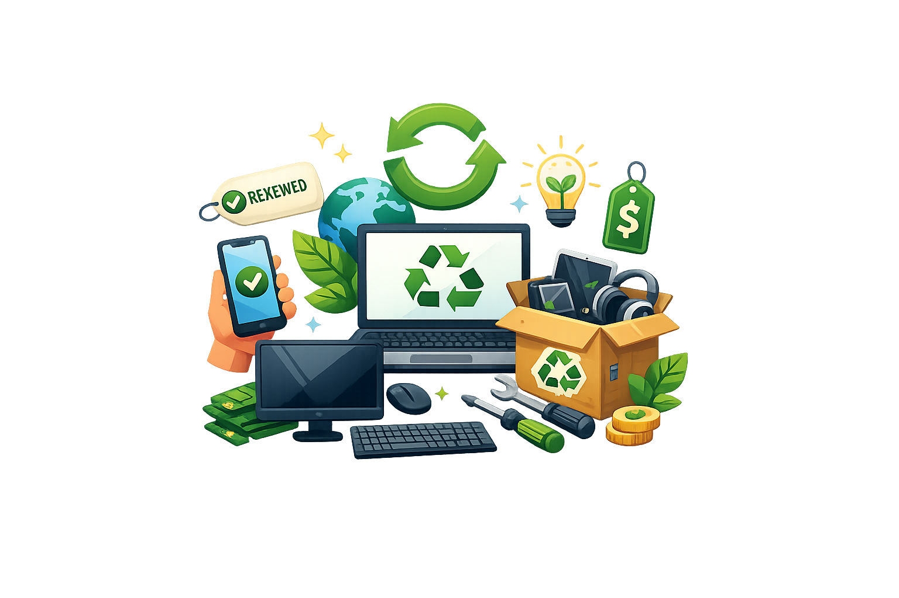
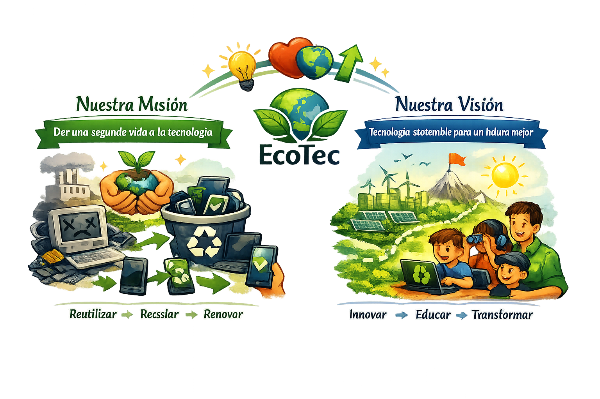

Misión
Dar una segunda oportunidad a los dispositivos electrónicos, transformando residuos en recursos útiles para la sociedad.
Una iniciativa que combina innovación, sostenibilidad y compromiso social para transformar la gestión de residuos electrónicos en Colombia.

EcoTech nace de la convicción de que la sostenibilidad comienza con decisiones responsables. Somos una empresa enfocada en la gestión de residuos electrónicos (RAEE), ofreciendo soluciones de recolección, reciclaje y reacondicionamiento de computadores, celulares y periféricos.
Nuestra misión es reducir la contaminación ambiental causada por el desecho inadecuado de equipos tecnológicos, promoviendo un modelo de economía circular que mantenga materiales en uso y brinde acceso a tecnología asequible para comunidades de bajos recursos.
Dar una segunda oportunidad a los dispositivos electrónicos, transformando residuos en recursos útiles para la sociedad.
Convertirnos en referentes de innovación sostenible en Colombia y Latinoamérica, democratizando el acceso a la tecnología mientras cuidamos el planeta.
Responsabilidad ambiental, innovación, transparencia, inclusión social y compromiso con la calidad en cada etapa del proceso.

A través de una plataforma digital y una aplicación móvil, facilitamos la venta, intercambio y trueque de equipos reacondicionados. Ofrecemos productos confiables, sometidos a pruebas de rendimiento, y promovemos hábitos de consumo consciente.
Cuatro etapas claras que puedes seguir desde el retiro hasta la entrega del equipo.
Recibimos dispositivos electrónicos en puntos aliados o a través de nuestra plataforma.
Evaluamos el estado del equipo para definir si puede reacondicionarse o debe reciclarse.
Reparamos, limpiamos y probamos los equipos bajo estándares de calidad.
Los dispositivos se ponen a disposición de personas y organizaciones que los necesitan.
Dispositivos recolectados
Equipos reacondicionados
Aliados y organizaciones
Toneladas de RAEE gestionadas
Súmate a EcoTech donando tus equipos, convirtiéndose en aliado o adquiriendo tecnología reacondicionada. Cada acción cuenta para reducir la huella ambiental.